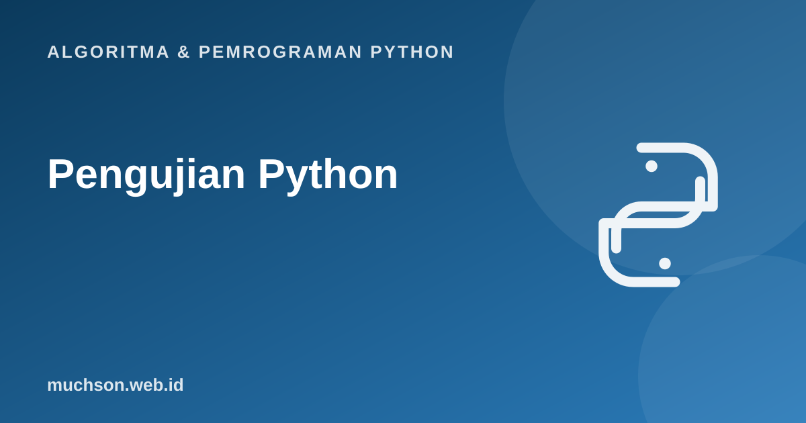

Beranda › Artikel › Algoritma & Pemrograman Python
Algoritma & Pemrograman PythonPengujian Python: Assert, unittest, dan TDD
"Berjalan" bukan berarti "benar". Pengujian otomatis adalah cara memastikan kode melakukan yang seharusnya, dan tetap melakukannya setelah Anda mengubahnya enam bulan lagi. Materi ini memperkenalkan pengujian dari yang paling sederhana (assert) sampai kerangka unittest dan alur TDD.
Sebaiknya sudah paham: fungsi, exception

Tujuan belajar
Setelah membaca dan mencoba materi ini, Anda mampu:
- menulis pernyataan assert sederhana
- merancang kasus uji: normal, batas, dan error
- menulis test case dengan unittest dan membaca hasilnya
- menjelaskan siklus TDD: merah, hijau, refactor
- menulis kode yang mudah diuji
Mengapa menguji?
- Menemukan bug lebih awal, saat memperbaikinya masih murah.
- Memberi keberanian mengubah kode (refactoring) tanpa takut merusak hal lain.
- Berfungsi sebagai dokumentasi hidup tentang perilaku yang diharapkan.
- Memaksa Anda memikirkan kasus tepi di awal.
Langkah paling sederhana: assert
def luas_persegi_panjang(p, l):
return p * l
assert luas_persegi_panjang(3, 4) == 12
assert luas_persegi_panjang(0, 5) == 0
print("semua assert lolos")
try:
assert luas_persegi_panjang(2, 2) == 5, "harusnya 4"
except AssertionError as e:
print("gagal:", e)semua assert lolos
gagal: harusnya 4
Merancang kasus uji
| Jenis | Contoh untuk fungsi rata_rata(list) |
|---|---|
| Normal | [2, 4, 6] → 4 |
| Satu elemen | [7] → 7 |
| Batas / nol | [0, 0] → 0 |
| Negatif / pecahan | [-1, 1] → 0; [0.5, 1.5] → 1.0 |
| Tidak valid | [] → seharusnya menimbulkan ValueError (bukan ZeroDivisionError yang membingungkan) |
unittest: kerangka pengujian bawaan
import sys, unittest
def rata_rata(data):
if not data:
raise ValueError("data tidak boleh kosong")
return sum(data) / len(data)
class TesRataRata(unittest.TestCase):
def test_normal(self):
self.assertEqual(rata_rata([2, 4, 6]), 4)
def test_satu_elemen(self):
self.assertEqual(rata_rata([7]), 7)
def test_pecahan(self):
self.assertAlmostEqual(rata_rata([0.1, 0.2]), 0.15) # aman untuk float
def test_kosong(self):
with self.assertRaises(ValueError):
rata_rata([])
unittest.main(argv=["x"], exit=False, testRunner=unittest.TextTestRunner(stream=sys.stdout, verbosity=2))test_kosong (__main__.TesRataRata.test_kosong) ... ok
test_normal (__main__.TesRataRata.test_normal) ... ok
test_pecahan (__main__.TesRataRata.test_pecahan) ... ok
test_satu_elemen (__main__.TesRataRata.test_satu_elemen) ... ok
----------------------------------------------------------------------
Ran 4 tests in 0.000s
OK
Aturan unittest
Nama metode uji harus diawali test agar ditemukan otomatis. Gunakan assertAlmostEqual untuk float, bukan assertEqual, karena 0.1 + 0.2 tidak persis 0.3.
Test-Driven Development (TDD)
# Langkah 1 (merah): tes untuk fungsi yang belum ada
# assert fizzbuzz(3) == "Fizz"; assert fizzbuzz(5) == "Buzz"; ...
# Langkah 2 (hijau): implementasi
def fizzbuzz(n):
if n % 15 == 0: return "FizzBuzz"
if n % 3 == 0: return "Fizz"
if n % 5 == 0: return "Buzz"
return str(n)
assert fizzbuzz(3) == "Fizz" and fizzbuzz(5) == "Buzz"
assert fizzbuzz(15) == "FizzBuzz" and fizzbuzz(7) == "7"
print([fizzbuzz(i) for i in range(1, 16)])['1', '2', 'Fizz', '4', 'Buzz', 'Fizz', '7', '8', 'Fizz', 'Buzz', '11', 'Fizz', '13', '14', 'FizzBuzz']
Menulis kode yang mudah diuji
Latihan mandiri1. Tulis tiga assert untuk fungsi
2. Rancang kasus uji untuk fungsi
Coba kerjakan dulu sebelum membuka jawaban.
1. Tulis tiga assert untuk fungsi apakah_kabisat(tahun) yang mencakup tahun 1900, 2000, dan 2024.
assert not apakah_kabisat(1900)
assert apakah_kabisat(2000)
assert apakah_kabisat(2024)2. Rancang kasus uji untuk fungsi nilai_maksimum(daftar).
Normal [3, 9, 2] → 9; satu elemen [5] → 5; semua sama [4, 4] → 4; negatif [-3, -1] → -1; kosong [] → ValueError.
3. Mengapa tes sebaiknya tidak bergantung satu sama lain?
Agar urutan eksekusi tidak memengaruhi hasil, dan satu tes yang gagal tidak menyembunyikan yang lain. unittest menyiapkan keadaan baru lewat setUp.
Ringkasan
- assert memeriksa asumsi dengan cepat; unittest menyusun tes menjadi test case yang bisa dijalankan otomatis.
- Rancang kasus normal, batas, dan error.
- TDD: tes gagal dulu, buat lulus, lalu rapikan.
- Kode yang mengembalikan nilai dan tidak bergantung pada global lebih mudah diuji.
Tanya jawab
Apa bedanya unittest dan pytest?
unittest ada di pustaka standar dan bergaya kelas. pytest pihak ketiga, lebih ringkas (cukup fungsi dan assert biasa), dan sangat populer. Konsepnya sama.
Berapa banyak tes yang cukup?
Tidak ada angka pasti. Fokus pada logika penting dan kasus tepi; cakupan (coverage) membantu melihat bagian yang belum diuji.
Apakah menulis tes memperlambat pengembangan?
Di awal terasa lebih lambat, tetapi pada proyek yang bertahan lama justru menghemat waktu karena bug ditemukan lebih cepat.
Referensi
- Dokumentasi Python: unittest, Unit testing framework
- Dokumentasi Python: The assert statement
- Kent Beck, Test-Driven Development: By Example (Addison-Wesley, 2002)
- MIT OpenCourseWare 6.0001: Introduction to Computer Science and Programming in Python